Unidad 2
Contenidos de la unidad
Catorce sesiones, seis de práctica en el ordenador. Al terminar, tu página de la UT1 tendrá una hoja de estilo que la hace verse bien en el ordenador y en el móvil, y estará publicada.
- 2.1Qué es CSS y cómo se escribe: reglas, selectores, colores, texto y cajas
- 2.2PrácticaTu página con estilo, parte 1
- 2.3Colocar cosas: display y flexbox; menús, tablas, formularios e imágenes
- 2.4PrácticaCabecera, menú y columnas
- 2.5Grid, posición y diseño responsive
- 2.6PrácticaPágina final responsive y publicada
- 2.7Examen de teoría y examen práctico «Mi película favorita»
Resultado de aprendizaje 1
Qué vas a saber hacer al terminar
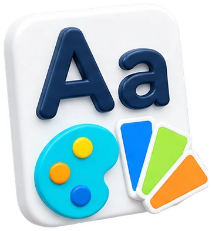
Lenguajes de marcas
Dar color, tipografía y espacio a cualquier página
Desde una hoja de estilo externa, sin tocar el HTML.
Lenguajes de marcas
Elegir el selector que llega justo al elemento
Y saber qué regla gana cuando hay varias.
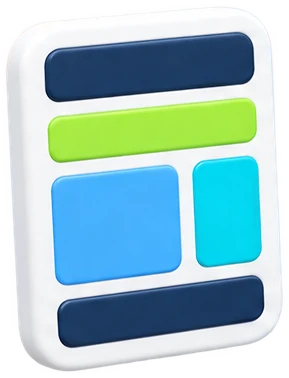
Lenguajes de marcas
Colocar cabecera, menú, columnas y pie
Con flexbox y grid, como se hace hoy.
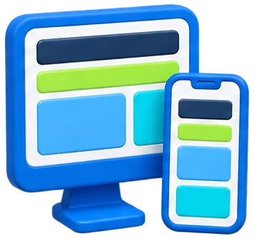
Lenguajes de marcas
Hacer que la misma página se vea bien en el móvil
Diseño responsive con media queries.
Herramientas
Leer y revisar cualquier hoja de estilo
Con DevTools y el validador CSS del W3C.
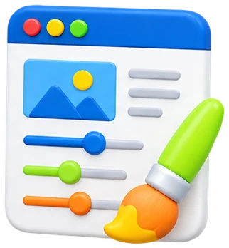
Prepara el criterio c
Personalizar el aspecto de un gestor de contenidos
Es el «CSS adicional» de WordPress en la UT3.
El resultado de aprendizaje 1, instalar gestores de contenidos, empezó en la UT1 con HTML y se completa en la UT3 con WordPress.
Qué es CSS
Tu página, antes y después. El HTML es el mismo
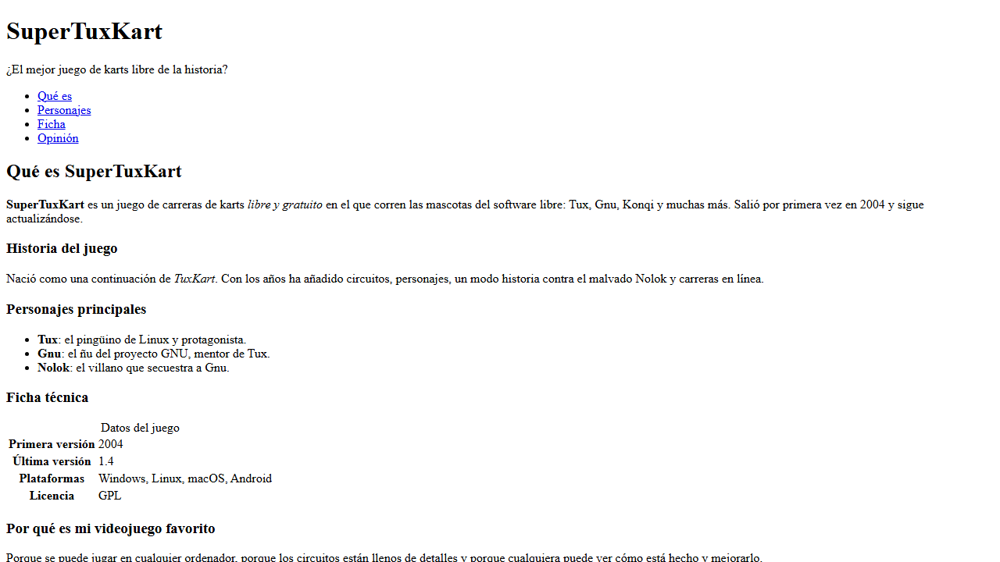
Antes. Sin CSS, el navegador aplica su estilo por defecto: letra Times New Roman, texto negro sobre fondo blanco, todo en una columna.
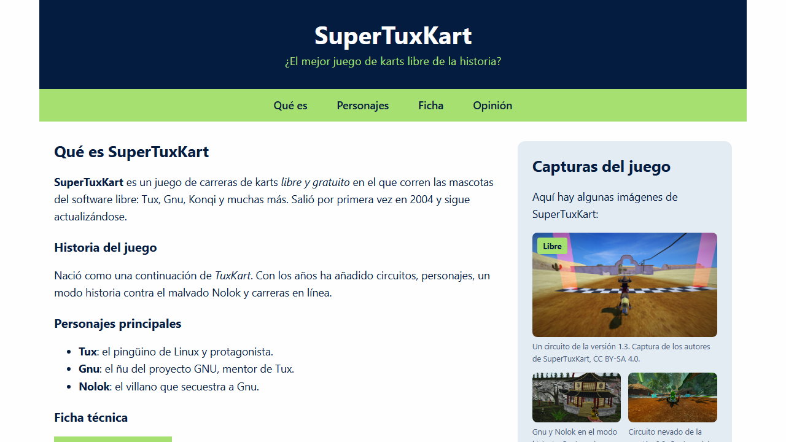
Después. Una hoja de estilo de unas 120 líneas: paleta, tipografía, cabecera, menú, dos columnas, galería y versión móvil.

Pregunta a la clase
¿Qué hace esta web que la tuya no hace?
Se abre en clase la web de GTA VI (rockstargames.com/VI) y se hace scroll. Fíjate en lo que se mueve, en lo que aparece y en cuándo cargan las imágenes.
Qué hay detrás
- ●Parallax: el fondo se mueve a distinta velocidad que el texto. Posiciones y transformaciones CSS.
- ●Bloques que aparecen al llegar a ellos: transiciones y animaciones CSS.
- ●Lazy loading: las imágenes cargan cuando hacen falta, no todas al principio.
- ●Una secuencia de imágenes que avanza con el scroll: JavaScript (UT6) cambia lo que CSS muestra.
- ●El HTML de debajo es el mismo que sabes escribir: encabezados, párrafos, imágenes y enlaces.
Qué es CSS
Un poco de historia, sin versiones que memorizar
CSS lo mantiene el W3C, la organización que publica los estándares de la web. La referencia que usaremos es MDN; para saber si algo funciona en todos los navegadores, caniuse.com o la marca «Baseline» de MDN, que aparece cuando algo ya funciona en todos.
«CSS3» es el nombre que muchos tutoriales dan a todo lo que llegó después de CSS2: una etiqueta, no una versión. Todo lo de esta unidad funciona en cualquier navegador actual.
- 1994Håkon Wium Lie propone CSS en el CERN para separar el aspecto del contenido HTML
- 1996CSS1: texto, colores, fondos, márgenes
- 1998CSS2: posicionamiento y cajas. Muchos tutoriales antiguos se quedan aquí
- desde 2000Se deja de numerar: CSS se desarrolla por módulos, cada uno con su nivel (Flexbox nivel 1, Grid nivel 2, Selectores nivel 4). No existe ni existirá un «CSS4»
- 2015–2017Flexbox y Grid funcionan en todos los navegadores. Ya no hace falta maquetar con float ni con tablas
- hoyVariables, reglas anidadas unas dentro de otras, cajas que se adaptan a su hueco. Lo básico de esta unidad lleva años igual
Qué es CSS
Anatomía de una regla
Una hoja de estilo es una lista de reglas. Cada regla dice a qué elementos se aplica y qué aspecto les da.
- —El selector dice a qué elementos se aplica la regla
- —Entre llaves, las declaraciones: propiedad, dos puntos, valor y punto y coma. Una por línea
- —Los comentarios van entre
/* */ - —Espacios y saltos de línea libres, para que se lea bien. Todo en minúsculas: las clases distinguen
.Galeriade.galeria - —Sin punto y coma se pierden esa declaración y la siguiente; sin la llave de cierre, todo lo que viene detrás. El navegador no avisa: descarta lo que no entiende
/* Título principal de la página */
h1 {
color: #041c3f;
font-size: 2.5rem;
text-align: center;
}
/* selector { propiedad: valor; } */
p {
line-height: 1.6;
}
Qué es CSS
Tres formas de aplicar CSS, y la que usamos
El CSS puede ir en un archivo aparte, dentro del <head> o en la propia etiqueta. Las tres funcionan; usamos el archivo aparte porque un solo cambio llega a todas las páginas del sitio.
1 · Hoja externa: la que usamos
<head>
<meta charset="utf-8">
<title>SuperTuxKart</title>
<link rel="stylesheet"
href="estilos.css">
</head>
h1 { color: crimson; }
Un archivo para todo el sitio. Se cambia una vez y cambian todas las páginas.
2 · Interna: para pruebas y CodePen
<head>
<meta charset="utf-8">
<title>SuperTuxKart</title>
<style>
h1 { color: crimson; }
</style>
</head>
Vale para una sola página. En CodePen, la pestaña CSS hace esto por ti.
3 · En línea: dentro de la etiqueta
<body>
<h1 style="color: crimson;">
SuperTuxKart
</h1>
</body>
Mezcla el aspecto con el contenido, hay que repetirlo en cada etiqueta y gana a la hoja, así que luego cuesta cambiarlo. Es lo que hacían FONT y ALIGN en HTML 4: por eso lo evitamos.
Qué es CSS
Tu primera hoja de estilo en cinco pasos
- 1.Crea
estilos.cssen la misma carpeta queindex.html - 2.Enlázala: escribe el
<link>dentro del<head>; enhref, la ruta del archivo - 3.Una regla para
bodycon un color de fondo, y guarda - 4.Recarga. Si no cambia nada, revisa la ruta del
hrefy el nombre del archivo: minúsculas, sin espacios - 5.Abre DevTools, pestaña Estilos, y comprueba que aparece tu archivo
<!DOCTYPE html> <html lang="es"> <head> <meta charset="utf-8"> <title>SuperTuxKart</title> <link rel="stylesheet" href="estilos.css"> </head>
body {
background-color: #e3ecf3;
}
La carpeta del proyecto: index.html, estilos.css e img/. Es la misma que subirás a GitHub al final de la unidad.
Qué es CSS
Verlo en el navegador: DevTools, pestaña Estilos
Selecciona un elemento en Elementos y a la derecha aparecen todas las reglas que le afectan, con el archivo y la línea de cada una.
- —Tachado: esa declaración perdió frente a otra regla
- —Triángulo amarillo: el navegador no entiende esa propiedad o ese valor
- —hoja de estilo de user-agent: el estilo por defecto del navegador. Por eso un
h1se ve grande y en negrita aunque no tengas CSS - —Puedes editar en vivo para probar; al recargar se pierde
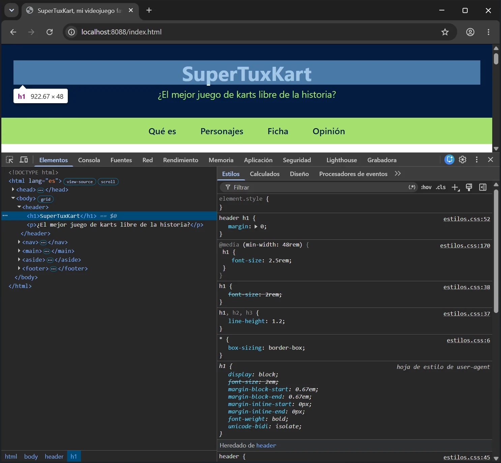
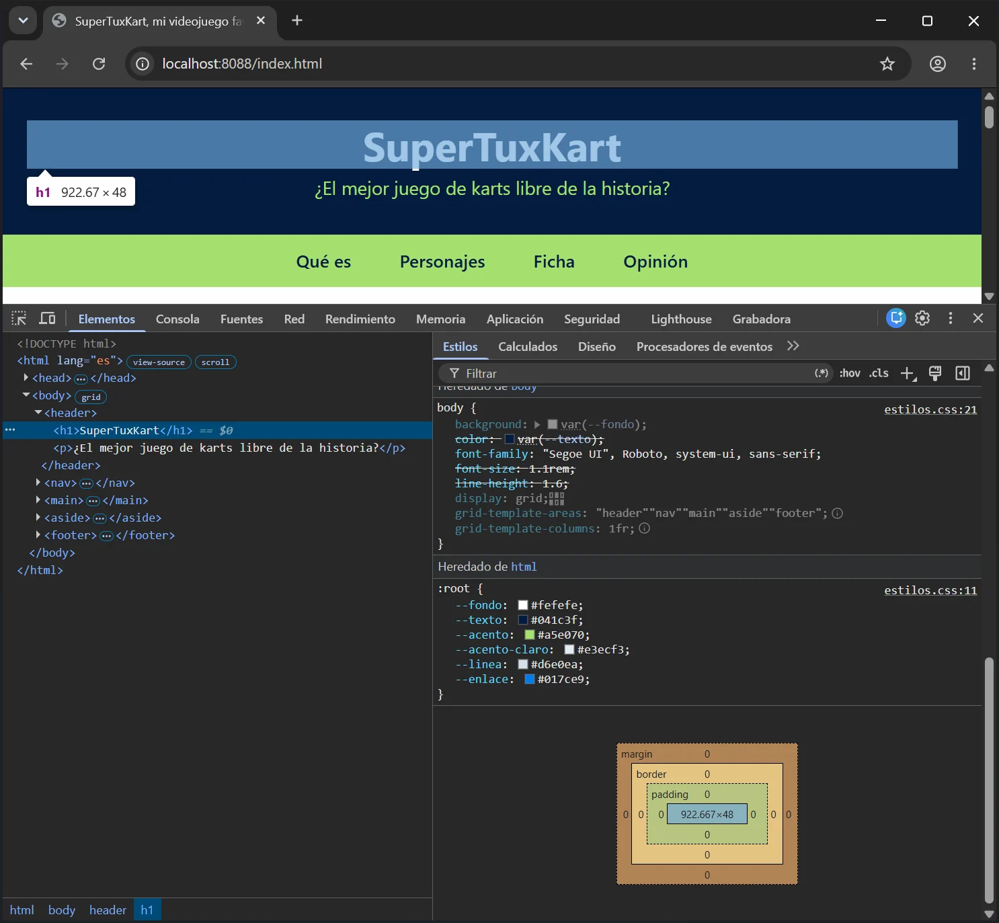
Selectores
Selectores básicos: a quién afecta la regla
El selector es la parte de la regla que dice a qué elementos se aplica. Estos son los cinco básicos: por etiqueta, por clase, por id, varios a la vez y todos.
/* de elemento: todos los p */
p { line-height: 1.6; }
/* de clase: los que llevan class="destacado" */
.destacado { background: #a5e070; padding: .5rem; }
/* de id: el único elemento con id="ficha" */
#ficha { border-left: 6px solid #017ce9; }
/* agrupación: la misma regla para varios */
h1, h2, h3 { color: #041c3f; font-family: sans-serif; }
/* universal: todos los elementos */
* { box-sizing: border-box; }
- —En el HTML:
<p class="destacado">y<h2 id="ficha"> - —La clase se repite en todos los elementos que haga falta; el id es único y lo reservamos para las anclas
- —Nombres que digan qué es, como
.precio: si el precio pasa de rojo a azul, el nombre sigue valiendo
Selectores
Selectores combinados: llegar a un elemento concreto
Los selectores se combinan para llegar solo a los elementos que interesan. Se leen como un árbol familiar: un hijo está justo dentro de otro elemento; un descendiente, dentro a cualquier nivel.
/* descendiente (espacio): los a de dentro del nav */
nav a { color: white; background: #041c3f; }
/* hijo (>): los li que están justo dentro de un ul */
ul > li { margin-bottom: .3rem; }
/* elemento con clase (pegados): solo los p destacados */
p.destacado { font-weight: 700; }
/* dos clases (pegadas): el elemento que tiene las dos */
.boton.grande { font-size: 1.4rem; }
/* de atributo: los input de tipo email */
input[type="email"] { border: 2px solid #017ce9; }
- —
nav allega a los enlaces del menú; el del párrafo se queda como estaba - —Pegados,
.boton.grande: un elemento con las dos clases. Con espacio,.boton .grande: un.grandedentro de un.boton
Estilo visual
Colores: cuatro maneras de escribir el mismo
color da color al texto y background, al fondo. El color se escribe de cuatro formas que dan el mismo resultado; la hexadecimal es la más habitual.
/* por su nombre: hay unos 148 */
.nombre { background: crimson; }
/* #rrggbb: rojo, verde y azul, de 00 a ff */
.hex { background: #dc143c; }
/* abreviado: #fa0 es #ffaa00 */
.hex3 { background: #fa0; }
/* rojo, verde y azul, de 0 a 255 */
.rgb { background: rgb(220 20 60); }
/* tono (0 a 360), saturación y luz */
.hsl { background: hsl(348 83% 47%); }
/* transparente: se ve al 40 % */
.alfa { background: rgb(220 20 60 / 40%); }
/* color, el del texto; background-color, el del fondo */
body { color: #041c3f; background-color: #fefefe; }
- —hsl elige el tono en la rueda de color, de 0 a 360: para aclarar u oscurecer, basta cambiar el último número. Con comas,
rgb(220, 20, 60), también vale - —
backgroundes el atajo debackground-color. En DevTools, el cuadrado de color junto al valor abre el selector. Paletas hechas: coolors.co
Estilo visual
Contraste y tamaño: que el texto se lea
Una página se usa si se lee. El contraste es la diferencia de luz entre el texto y su fondo; junto con el tamaño de la letra, decide si un texto se lee sin esfuerzo.
- —Se mide como una proporción: 21 a 1 es negro sobre blanco; 1 a 1, el mismo color. Las pautas de accesibilidad (WCAG) piden 4,5 a 1 para el texto normal; DevTools lo mide en el selector de color
- —Texto oscuro sobre fondo claro, o al revés. Sobre una foto, con una capa oscura debajo del texto
- —Tamaño de lectura en pantalla: 16 px como mínimo. Los títulos, más; la letra pequeña, para pies y notas
- —Una paleta corta da orden: fondo, texto, un acento y una versión clara del acento. Es la de tu maqueta
Se lee
Texto #041c3f sobre #fefefe. Contraste 16 a 1.
No se lee
Texto #b8c2cc sobre #fefefe. Contraste 1,9 a 1.
Se lee
Texto #a5e070 sobre #041c3f. Contraste 10 a 1.
No se lee
Texto blanco sobre #a5e070. Contraste 1,5 a 1.
Estilo visual
Tipografía
Con estas propiedades se eligen la letra, su tamaño, su grosor y el espacio entre líneas. font-family recibe una lista de fuentes, la pila: el navegador usa la primera que tenga instalada.
body {
/* pila: usa la primera que tenga instalada */
font-family: "Segoe UI", Roboto, system-ui, sans-serif;
font-size: 1.1rem;
line-height: 1.6; /* interlineado: 1,6 × la letra */
}
h1 {
font-size: 2.5rem;
font-weight: 800; /* grosor: 400 normal, 700 negrita */
letter-spacing: -.02em; /* espacio entre letras */
text-align: center; /* lo que hacía P ALIGN */
}
h2 { font-style: italic; text-transform: uppercase; }
a { text-decoration: none; } /* sin subrayado */
small { font-size: .85rem; } /* lo que hacía BIG */
code { font-family: monospace; } /* lo que hacía TT */
- —La última de la pila es siempre una genérica:
serif,sans-serif,monospace. Comillas cuando el nombre lleva espacios - —
italic, cursiva;uppercase, mayúsculas. Lo que hacíanFONT,ALIGN,BIGyTTen HTML 4 está aquí
Estilo visual
Unidades: cuál usar para cada cosa
Toda medida lleva su unidad. Unas son fijas y otras se calculan a partir de algo (la letra, la caja que la contiene, la ventana): por eso cada una sirve para una cosa.
Tabla 2.1. Regla del curso: rem para texto y espacios, px para detalles, % para anchos. El cero no lleva unidad: margin: 0.
Estilo visual
Fuentes que no están en el ordenador
Con la pila del sistema cada visitante ve la fuente que tenga instalada. Si quieres una concreta, Google Fonts tiene cientos gratuitas: eliges una, copias el <link> al <head> y la usas en font-family, con su pila de reserva.
Aviso. Con el <link>, cada visita descarga la fuente de Google y le envía su IP. En la UE se ha visto como un problema de privacidad, y muchas webs descargan la fuente y la sirven desde su servidor con @font-face, la regla que carga una fuente desde un archivo. En CodePen, el <link>; en tu página publicada, la pila del sistema o la fuente descargada.
<!-- en el head, lo que da Google Fonts -->
<link rel="stylesheet"
href="https://fonts.googleapis.com/css2?family=Nunito
:wght@400;700&display=swap">
<style>
body { font-family: "Nunito", system-ui, sans-serif; }
/* alternativa: fuente descargada, servida desde tu carpeta */
@font-face {
font-family: "Nunito";
src: url("fuentes/nunito.woff2") format("woff2");
}
</style>
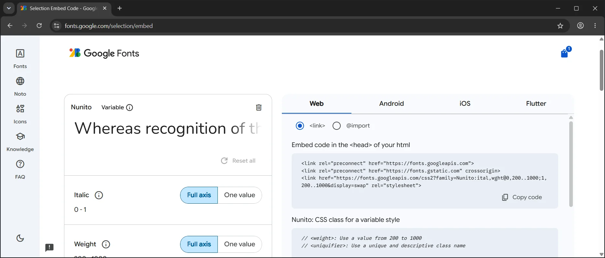
Cajas
Todo es una caja
Para el navegador, cada elemento es un rectángulo con cuatro capas, de dentro afuera. Con ellas se calcula cuánto mide una caja y cuánto se separa de las demás.
- —Contenido: el texto o la imagen. Su tamaño es
widthyheight - —Relleno,
padding: espacio entre el contenido y el borde. Tiene el mismo color de fondo que el contenido - —Borde,
border: la línea que rodea la caja - —Margen,
margin: separación con las cajas de al lado. Transparente
DevTools dibuja esta caja al pasar el ratón por cualquier elemento, con sus medidas.
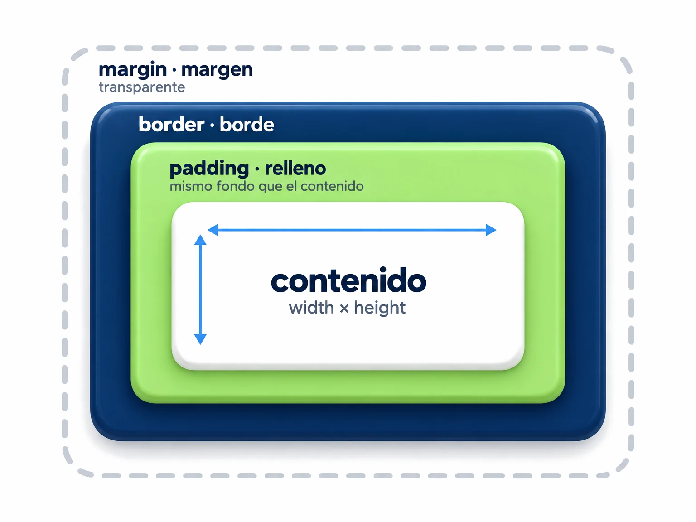
Figura 2.2. El modelo de caja. Es lo que DevTools enseña abajo del todo en la pestaña Estilos.
Cajas
margin, padding y border
padding separa el contenido de su borde, border dibuja la línea y margin aparta la caja de las demás. Cada una admite de uno a cuatro valores, uno por lado.
.ficha {
padding: 1rem; /* un valor: los 4 lados */
margin: 1rem 0; /* dos: arriba-abajo, lados */
border: 2px solid #041c3f; /* grosor · estilo · color */
border-radius: 12px; /* esquinas redondeadas */
/* sombra: desplazamiento x e y, difuminado, color */
box-shadow: 0 4px 12px rgb(0 0 0 / 15%);
}
.etiqueta {
padding: .25rem .75rem;
border: 2px dashed #017ce9; /* línea a rayas */
border-radius: 999px; /* forma de píldora */
}
/* círculo: caja cuadrada con radio del 50 % */
.avatar { width: 80px; height: 80px; border-radius: 50%; }
/* hr: sin su borde y con una línea fina arriba */
hr { border: 0; border-top: 1px solid #d6e0ea; }
- —Cuatro valores van en el sentido del reloj: arriba, derecha, abajo, izquierda
- —Bordes:
solidcontinuo,dasheda rayas,dottedde puntos.margin: 0 autocentra una caja con ancho: auto reparte el hueco sobrante entre los dos lados
Cajas
Ancho, alto y el reset del curso
Cada navegador trae márgenes y medidas por defecto que descuadran las cajas. El reset son tres reglas que lo igualan y abren todas las hojas del curso. El ancho se limita con max-width.
/* El reset del curso, al principio de la hoja */
/* el ancho incluye el relleno y el borde */
* { box-sizing: border-box; }
/* el body, pegado a los bordes de la ventana */
body { margin: 0; }
/* cada imagen cabe en su caja */
img { max-width: 100%; height: auto; }
/* Ancho máximo: crece hasta 60rem y se centra */
main { max-width: 60rem; margin: 0 auto; }
/* Las dos cajas: width: 250px, padding: 20px y
borde de 10px. Solo una mide 250 en total */
.sin { box-sizing: content-box; }
.con { box-sizing: border-box; }
- —El alto lo pone el contenido, y así el texto siempre cabe. Para asegurar un mínimo,
min-height - —Con
max-widthla caja se encoge sola en pantallas estrechas. Es el primer paso del diseño responsive
Cascada
Cascada, especificidad y herencia: quién gana
Cuando dos reglas dan valores distintos a la misma propiedad de un elemento, el navegador aplica uno. Estas cuatro reglas deciden cuál gana: en DevTools, lo que pierde sale tachado.
Gana la regla más específica, la que señala el elemento con más precisión. Un id pesa más que una clase; una clase, más que un elemento. nav a gana a a. Se puede contar 100 por id, 10 por clase y 1 por elemento, pero once clases no ganan a un id.
A igual especificidad, gana la última escrita. Por eso el orden de la hoja importa, y la interna y la externa tienen la misma fuerza: decide cuál va después en el <head>.
El estilo en línea gana a la hoja, y !important gana a todo. Por eso los evitamos: para corregir esa regla haría falta otro !important.
Herencia. Lo del texto (color, fuente, tamaño) pasa de body a todo lo de dentro; la caja (borde, margen, fondo) es propia de cada elemento. Por eso body { font-family } cambia toda la página.
/* HTML: <nav id="menu"><a class="activo"> */
a { color: blue; } /* 1 elemento */
/* 2 elementos: gana a la anterior */
nav a { color: white; }
/* 1 clase: gana a las dos anteriores */
.activo { color: green; }
/* 1 id + 1 elemento: gana a todas */
#menu a { color: red; }
/* igual que la primera, pero después:
gana a la primera, no a las demás */
a { color: orange; }
/* En DevTools verás tachado lo que perdió */
Selectores
Cómo se elige el selector
Quieres una regla que afecte solo al enlace marcado. Lee el HTML desde el elemento marcado hacia fuera: es un a con la clase activo, dentro de un nav.
- ✓
nav .activo: lo alcanza, y solo a él - ✗
nav a: alcanza de más, también el otro enlace del menú - ✗
#activo: no alcanza nada, es una clase, no un id - ✗
a .activo: con espacio busca un descendiente del enlace; no hay
<nav>
<ul>
<li><a href="#que-es">Qué es</a></li>
<li><a href="#ficha" class="activo">Ficha</a></li>
</ul>
</nav>
<p>Lee <a href="#">más</a>.</p>
¿Qué selector lo alcanza?
Cada vez sale un HTML distinto con una o varias líneas marcadas. Elige el selector que llega justo a lo marcado. Comprobar marca en el HTML lo que alcanza tu selector; Pista te dice de qué familia es; Resolver explica qué alcanzaba cada uno.
Tu página con estilo, parte 1
Abre en VS Code la carpeta de tu «Mi videojuego favorito» (si no la conservas, descarga el index.html que entregaste). Crea estilos.css, enlázala y consigue el aspecto de la maqueta 1. Todavía en una columna.
Tu HTML tiene que tener header, nav, main, aside y footer. Si te falta el nav con los cuatro enlaces a las anclas, añádelo: es el único cambio de HTML permitido en la unidad.
Duración
2 sesiones
Modalidad
Individual, en el aula
Entrega
Al final de la unidad, con las partes 2 y 3. Se revisa en la sesión 4
Material
VS Code, navegador, esta presentación. Sin IA
- 1.El reset del curso y la paleta en variables: fondo, texto, acento, acento claro y línea
- 2.Tipografía con pila (una de Google Fonts en los títulos, si quieres) y
maincentrado conmax-width: 60rem - 3.Espaciado de encabezados, párrafos y listas; tabla con bordes unidos y filas cebra; formulario con campos a ancho completo; figuras con pie en pequeño
- 4.Cuaderno, en CodePen: ejercicio 1, la bandera de Laos; ejercicio 2, la tarjeta de un videojuego
Maqueta 1: cómo debe quedar
Una columna centrada, paleta aplicada, tipografía cuidada, tabla con cebra, formulario limpio. Clic en la imagen para verla entera.
La paleta
Puedes cambiarla por la de tu juego si el contraste se lee (4,5 a 1 en el texto).
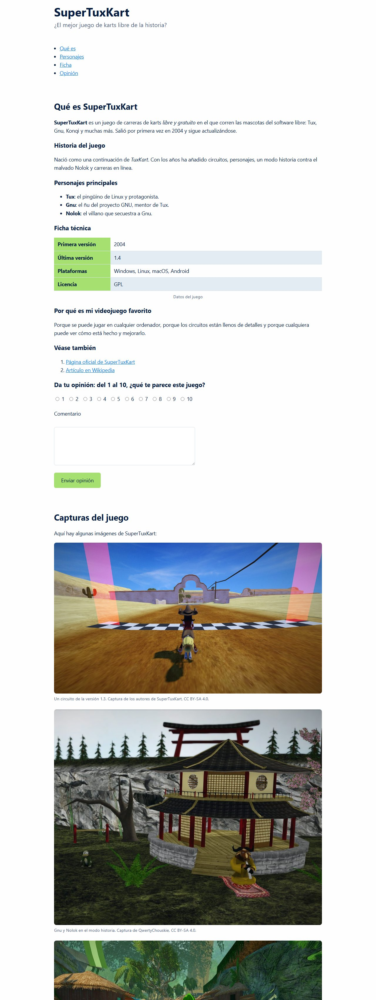
Figura 2.3. Maqueta 1, primera parte de la página. La captura completa está en Classroom.
Antes de dar por buena una práctica
La hoja pasa el validador CSS sin errores: jigsaw.w3.org/css-validator. Pega el código o sube el archivo.
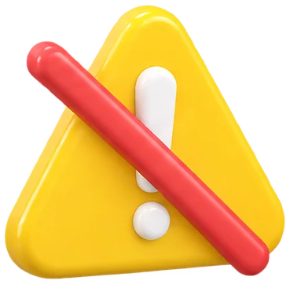
En DevTools no hay triángulos amarillos: ninguna propiedad ni valor que el navegador no entienda.
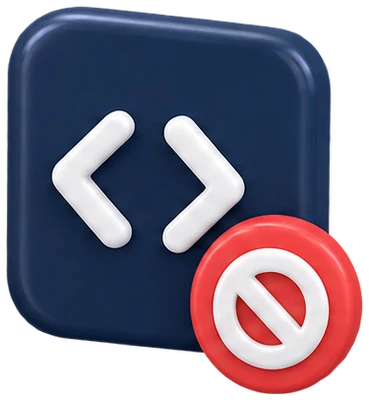
Cero atributos style en el HTML. Todo el aspecto está en estilos.css.
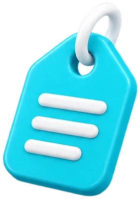
Los nombres de clase describen el contenido: .galeria, .notas, no .caja1.
Se ve bien al estrechar la ventana. En la práctica 2.1 basta con que nada desborde; en la 2.3, que la maqueta cambie a una columna.
Colocar cosas
Cajas de bloque y cajas de línea
Cada elemento se coloca según su display: en bloque, uno debajo de otro como los párrafos, o en línea, seguido del texto como un enlace.
- —
display: block: ocupa toda la anchura y empieza en línea nueva.p,h1,div,section - —
inline: sigue la línea del texto y mide lo que su contenido; ignora el ancho y el alto.a,strong,span - —
inline-block: en línea, pero con ancho, alto y relleno. Una etiqueta «PEGI 12» - —
none: quita el elemento y su hueco.visibility: hiddenlo vuelve invisible y conserva el hueco - —
flexygrid: colocan a los elementos de dentro, los hijos. Vienen a continuación
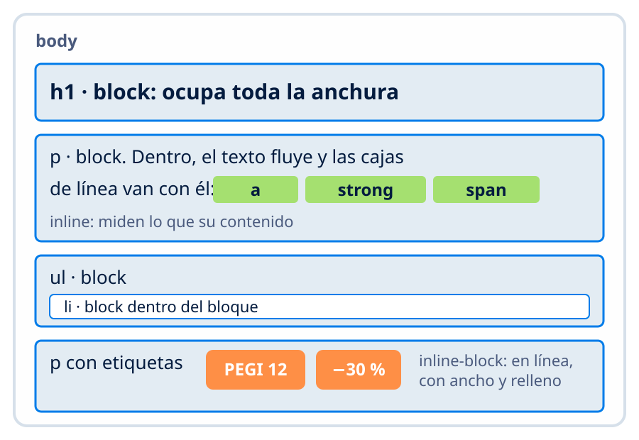
Figura 2.4. Cada elemento tiene un display por defecto; con CSS se cambia.
Flexbox
Flexbox: el contenedor coloca a sus hijos
display: flex va en el contenedor, la caja de fuera, y coloca en fila a sus hijos, los elementos que tiene justo dentro. El contenedor decide la dirección, el reparto y la alineación.
- —Eje principal: la fila (o la columna).
justify-contentreparte aquí - —Eje cruzado: el perpendicular, vertical si los hijos van en fila.
align-itemsalinea aquí - —Para todo lo que va en una dirección: menús, logo a un lado y botones al otro, tarjetas en fila, centrar
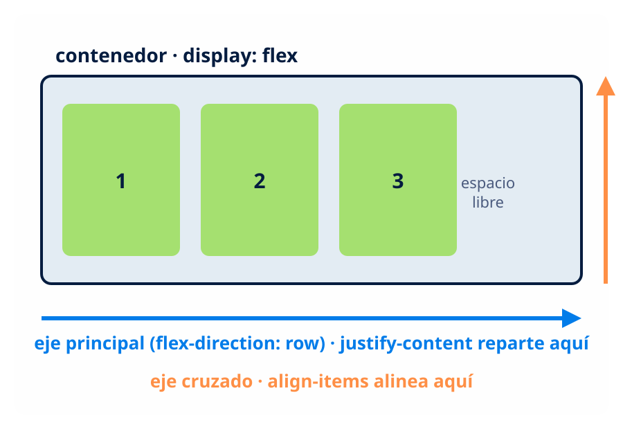
Figura 2.5. Contenedor, hijos y los dos ejes. Antes de flexbox (2015) esto se hacía con float y trucos; muchas páginas antiguas siguen así.
Flexbox
Dirección, reparto y alineación
Tres propiedades del contenedor deciden en qué dirección van los hijos, cómo se reparte el espacio libre y cómo se alinean; gap pone el hueco entre ellos.
.fila {
display: flex;
/* dirección: row, en fila (por defecto), o column */
flex-direction: row;
/* reparto en el eje principal: flex-start, center,
flex-end, space-between, space-around, space-evenly */
justify-content: space-between;
/* alineación en el eje cruzado: stretch (estira,
por defecto), flex-start, center, flex-end */
align-items: center;
gap: 1rem; /* hueco entre los hijos */
}
.columna { flex-direction: column; }
- —
space-between: los extremos, pegados a los bordes, y el espacio libre entre medias: el logo a un lado y el menú al otro - —
flex-start,centeryflex-endjuntan los hijos;space-aroundyspace-evenlydejan hueco también en los bordes
Flexbox
Centrar, crecer y saltar de línea
Tres usos más de flexbox: centrar en las dos direcciones, repartir el espacio entre los hijos y dejar que salten de línea.
/* Centrar en las dos direcciones */
.centro {
display: flex;
justify-content: center; /* en horizontal */
align-items: center; /* en vertical */
height: 6rem;
}
/* El body, contenedor flex que salta de línea */
body { display: flex; flex-wrap: wrap; gap: 0 1rem; }
/* cabecera, menú y pie: la fila entera */
header, nav, footer { flex: 0 0 100%; }
main { flex: 2; } /* el doble de espacio… */
aside { flex: 1; } /* …que el lateral */
- —
flexen un hijo dice cuánto crece:flex: 1reparte el espacio libre a partes iguales yflex: 2se lleva el doble. Con0 0 100%, ni crece ni encoge: ocupa la fila entera - —
flex-wrap: wrapbaja a otra línea los hijos que no caben. Es la maqueta de escritorio de la práctica 2.2; la definitiva, con grid, en la 2.3
Flexbox
El menú de navegación
El menú es una lista de enlaces dentro de <nav>, el HTML de la UT1. Tres reglas lo ponen en fila, le quitan viñetas y sangría y hacen de cada enlace una caja que se pulsa entera.
/* El HTML es el de la UT1: nav > ul > li > a */
nav { background: #a5e070; }
nav ul {
display: flex; /* los li, en fila */
gap: .5rem;
justify-content: center;
list-style: none; /* sin viñetas */
margin: 0; padding: 0; /* sin la sangría de la lista */
}
nav a {
display: block; /* toda la caja se pulsa */
padding: .75rem 1.25rem;
color: #041c3f;
text-decoration: none; /* sin subrayado */
font-weight: 600;
}
- —Es el patrón de cualquier web, y el que usa el tema de WordPress
- —Los cambios al pasar el ratón se añaden en la siguiente diapositiva
Selectores
Estados: cuando pasas el ratón, cuando pulsas
Una seudoclase selecciona un elemento según su estado: con el ratón encima, elegido con el teclado, mientras se pulsa o ya visitado. Así el visitante ve que la página responde.
nav a {
/* … las reglas del menú, y el cambio suave: */
transition: background-color .2s, color .2s;
}
/* con el ratón encima */
nav a:hover { background: #041c3f; color: white; }
/* al llegar con la tecla Tab */
nav a:focus { outline: 3px solid #017ce9; }
/* mientras se pulsa */
nav a:active { background: #017ce9; }
/* ya visitado: el mismo color que su padre */
a:visited { color: inherit; }
/* el botón: puntero de mano y crece un 5 % */
.boton { cursor: pointer; transition: transform .1s; }
.boton:hover { transform: scale(1.05); }
- —Van pegadas al selector, con dos puntos:
a:hover. Si usas varias, en el orden link, visited, hover, active: a igual especificidad gana la última, y así cada estado se ve cuando toca - —El
outlinees el contorno que marca dónde está el teclado. Si cambias el del:focus, pon otro: quien navega con Tab lo necesita
Componentes
Listas con estilo
Las propiedades list-style cambian las viñetas, la numeración y la sangría de una lista: un glosario más claro, unos pasos con letras o un menú sin viñetas.
/* disc, circle, square, none */
ul { list-style-type: square; }
/* decimal, lower-alpha, upper-roman… */
ol { list-style-type: lower-alpha; }
li { margin-bottom: .4rem; }
/* ::marker es la viñeta: aquí, de color */
li::marker { color: #017ce9; }
/* inside: la viñeta, dentro de la caja del texto */
ul.dentro { list-style-position: inside; padding-left: 0; }
/* Lista de definiciones: el glosario */
dt { font-weight: 700; color: #041c3f; margin-top: .6rem; }
dd { margin-left: 1.5rem; color: #4a5a7d; }
- —
li::marker, con dos veces dos puntos, es un seudoelemento: selecciona una parte del elemento, aquí la viñeta - —Las listas traen 40 px de sangría a la izquierda: por eso un menú lleva
padding: 0. El atributotypede HTML 4 es hoylist-style-type
Componentes
Tablas: lo que hacían los atributos, en CSS
Una tabla se lee mejor con relleno en las celdas, líneas finas y filas de dos colores. Lo que hacían los atributos de HTML 4 lo hace hoy CSS, en la tabla, en las celdas o en las filas.
/* bordes unidos: lo que hacía CELLSPACING="0" */
table { border-collapse: collapse; width: 100%; }
caption { caption-side: bottom; } /* título, debajo */
th, td {
padding: .5rem .75rem; /* CELLPADDING */
text-align: left; /* ALIGN */
vertical-align: middle; /* VALIGN */
/* BORDER, pero solo la línea de abajo */
border-bottom: 1px solid #d6e0ea;
}
th { background: #a5e070; width: 12rem; } /* WIDTH */
/* cebra: nth-child(even) elige las filas pares */
tbody tr:nth-child(even) { background: #e3ecf3; }
tbody tr:hover { background: #f3f7c9; }
/* tabla ancha en el móvil: dentro de un div.tabla */
.tabla { overflow-x: auto; } /* barra para desplazarse */
Componentes
Formularios
Los campos de formulario tienen un aspecto distinto en cada navegador. Con CSS se unifican: misma fuente, mismo ancho, mismo borde.
label { display: block; } /* una etiqueta por línea */
input, textarea, select {
font: inherit; /* la letra de la página */
width: 100%;
padding: .5rem;
border: 1px solid #d6e0ea;
border-radius: 6px;
}
/* el contorno del campo activo, con tu color */
input:focus, textarea:focus { outline: 2px solid #a5e070; }
button { font: inherit; background: #a5e070; }
button:hover { background: #041c3f; color: white; }
/* las notas del 1 al 5, en fila */
.notas { display: flex; gap: .75rem; }
.notas label { display: inline; }
.notas input { width: auto; }
- —Los campos traen la letra del sistema;
font: inheritles da la de la página. Heredar es tomar el valor del elemento padre - —Es el formulario de valoración de tu página. Con
input[type="email"]se trata aparte un tipo de campo
Componentes
Imágenes y figuras
Dos objetivos: que cada imagen quepa en su caja, también en el móvil, y que todas las capturas de una galería tengan la misma forma.
/* del reset: cada imagen cabe en su caja */
img { max-width: 100%; height: auto; }
figcaption { font-size: .85rem; color: #4a5a7d; }
/* Todas las capturas con la misma forma */
.galeria img {
width: 100%;
aspect-ratio: 16 / 9; /* 16 de ancho por 9 de alto */
object-fit: cover; /* llena la caja y recorta */
}
/* float: la imagen a un lado y el texto alrededor */
.flotante { float: left; width: 8rem; margin-right: 1rem; }
- —
aspect-ratiofija la proporción de la caja;object-fit: coverhace que la imagen la llene sin deformarse y recorta lo que sobra - —WIDTH, HEIGHT, ALIGN y BORDER de
<img>son hoywidth,height,floatyborder
Repaso
Cómo se completa una regla
Aparece una regla con un hueco. Lee el selector y las otras declaraciones: dicen para qué es la regla. Escribe solo lo que falta, una propiedad o un valor.
- 1.El selector es
nav uly hay ungap: es el menú, en fila - 2.Lo que pone a los hijos en fila es
display: flex - ✓Se escribe
flex, sin punto y coma
nav ul {
display: ___;
gap: 1rem;
list-style: none;
}
/* respuesta: flex */
Completa la regla que falta
Cada vez sale una regla distinta con un hueco. Comprobar corrige, Pista te dice para qué es, Resolver lo rellena y Otro ejercicio cambia de regla. Cuenta los aciertos seguidos sin pista.
Cabecera, menú y columnas
Sobre tu página de la práctica 2.1, consigue la maqueta 2 de escritorio: cabecera con franja de color, menú horizontal, dos columnas y pie.
Las columnas se hacen como en la diapositiva 32: el body es un contenedor flex que salta de línea; cabecera, menú y pie ocupan toda la anchura y main y aside comparten una línea en proporción 2 a 1. Sin tocar el HTML.
Duración
2 sesiones
Modalidad
Individual, en el aula
Entrega
Al final de la unidad. Se revisa en la sesión 8
Material
VS Code, navegador, esta presentación. Sin IA
- 1.
headercon fondo de color de texto, título en blanco y subtítulo en acento;footerigual, con el autor - 2.
navcon los cuatro enlaces en fila con flexbox,:hovercon transición, y las anclas funcionando - 3.
mainyasideen dos columnas,flex: 2yflex: 1; el lateral con fondo claro y las capturas - 4.Tabla cebra con
:hovery formulario como en las diapositivas 37 y 38 - 5.Cuaderno: ejercicio 3, un menú de navegación; ejercicio 4, el horario y el formulario de la UT1 con estilo
Maqueta 2: escritorio
A 1280 px de ancho. Clic en la imagen para verla entera.
- —Cabecera y pie con fondo
--texto; menú con fondo--acento - —
mainyasideen proporción 2 a 1, con un hueco de 2rem - —El lateral con fondo
--acento-claro, esquinas redondeadas y las capturas una debajo de otra (la rejilla llega en la 2.3)
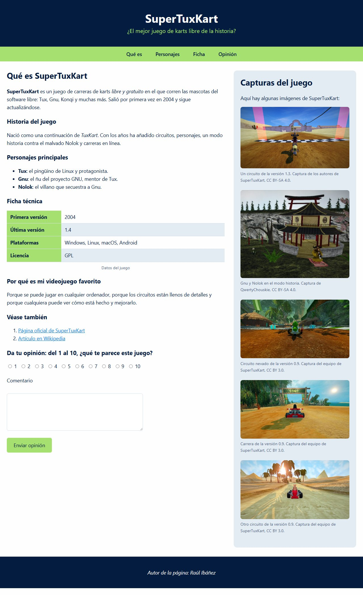
Figura 2.6. Maqueta 2, segunda parte de la página.
Grid
Grid: filas y columnas a la vez
display: grid en el contenedor define una rejilla; los hijos se colocan en sus celdas.
- —Flexbox: una dirección. Un menú, una fila de tarjetas, centrar
- —Grid: dos direcciones. La página entera, una galería
- —Regla práctica: grid reparte la página; flex ordena lo que hay dentro de cada zona
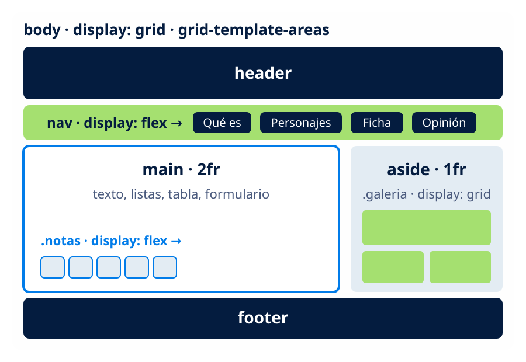
Figura 2.7. La maqueta final de tu página: grid para las zonas, flex dentro del menú y del formulario, grid otra vez para la galería.
Grid
Columnas y huecos
grid-template-columns dice cuántas columnas tiene la rejilla y cuánto mide cada una. Las filas se crean solas, según haga falta.
/* tres iguales: 1fr es una parte del espacio libre */
.tres { grid-template-columns: 1fr 1fr 1fr; }
/* lo mismo, abreviado */
.rep { grid-template-columns: repeat(3, 1fr); }
/* lateral fijo y el resto */
.lado { grid-template-columns: 12rem 1fr; }
/* tantas como quepan, de 9rem como mínimo */
.auto {
grid-template-columns:
repeat(auto-fit, minmax(9rem, 1fr));
}
.galeria { display: grid; gap: .5rem; }
- —
minmax(9rem, 1fr): cada columna mide al menos 9rem;auto-fitmete tantas como quepan.gap, igual que en flexbox - —Estrecha la ventana del resultado: la última rejilla cambia sola de columnas
Grid
La página entera con áreas
Con grid-template-areas se dibuja la maqueta con palabras: cada fila, entre comillas; cada zona, con su nombre. Repetir un nombre hace que la zona ocupe varias columnas.
body {
display: grid;
/* el dibujo: cada línea entre comillas es una fila */
grid-template-areas:
"header header"
"nav nav"
"main aside"
"footer footer";
grid-template-columns: 2fr 1fr;
gap: 1rem;
}
/* cada elemento, a su zona */
header { grid-area: header; }
nav { grid-area: nav; }
main { grid-area: main; }
aside { grid-area: aside; }
footer { grid-area: footer; }
- —Cambiar la maqueta es cambiar las comillas. En móvil bastará con ponerlas en una columna
- —Es la forma actual de hacer columnas; las páginas antiguas usan
floatyclear
Grid
Ocupar varias celdas: la galería
Un elemento puede ocupar varias celdas de la rejilla, en horizontal o en vertical. Así se destaca una captura en una galería.
.galeria {
display: grid;
grid-template-columns: repeat(3, 1fr);
gap: .5rem;
}
.galeria img {
width: 100%; height: 100%; /* llena la celda… */
object-fit: cover; /* …sin deformarse */
aspect-ratio: 16 / 9;
border-radius: 6px; display: block;
}
/* la destacada ocupa dos columnas */
.destacada { grid-column: span 2; }
/* también: grid-column: 1 / 3; o grid-row: span 2 */
- —
span 2cuenta celdas;1 / 3cuenta líneas de la rejilla (de la 1 a la 3) - —Es la galería de la práctica 2.3. Capturas: autores de SuperTuxKart, CC BY-SA 4.0 y CC BY 3.0
Posición
position: colocar una caja fuera de su sitio
Las cajas se colocan una tras otra, en el orden del HTML: es el flujo de la página. position saca una caja de ese orden para ponerla encima de otra o dejarla quieta al hacer scroll.
/* static: su sitio en el flujo (por defecto).
relative: se desplaza desde su sitio y deja el hueco;
sobre todo, hace de marco para un hijo absolute */
figure { position: relative; width: 16rem; }
.etiqueta {
position: absolute; /* encima, respecto a su marco */
top: .5rem; left: .5rem;
}
/* sticky: normal hasta que llega al borde; ahí se queda */
nav { position: sticky; top: 0; z-index: 10; }
/* fixed: quieta en la ventana, también con el scroll */
.subir { position: fixed; right: .5rem; bottom: .5rem; }
- —
absolutese coloca respecto a la caja conrelativemás cercana que la contiene; si no hay ninguna, respecto a la página - —
top,right,bottomyleftdicen dónde;z-index, quién queda encima: el número mayor - —Dos usos en tu página: la etiqueta sobre una captura y el menú que se queda arriba
54 %
De las visitas a webs en España se hacen desde el móvil
Una página que solo se ve bien en el ordenador del aula no le sirve a más de la mitad de la gente que la abre. Por eso la maqueta final tiene dos versiones.
44 %
Desde el ordenador en España. Tableta, 1 %
49 / 49
En el mundo, móvil y ordenador están a la par
Fuente: StatCounter, Platform Market Share, España y mundo, agosto de 2026, gs.statcounter.com. Consultado el 12 de septiembre de 2026.
Responsive
Diseño responsive en cinco pasos
Una página responsive (adaptable) se reorganiza según el ancho de la pantalla: una columna en el móvil, varias en el ordenador.
- 1.La
meta viewporten elhead. Ya está desde la UT1: sin ella el móvil simula una pantalla de 980 px y lo encoge todo - 2.Anchos en
%,remymax-width, que se adaptan: 960 px fijos desbordan un móvil - 3.Imágenes que se encogen con su caja:
max-width: 100%, del reset - 4.Media queries: reglas que cambian la colocación a partir de cierto ancho de pantalla
- 5.Probar en DevTools con el modo dispositivo y en tu móvil con la URL de GitHub Pages
Móvil primero: la base de la hoja es la pantalla estrecha, con una columna, y las media queries añaden columnas al crecer.
<head>
<meta charset="utf-8">
<meta name="viewport"
content="width=device-width, initial-scale=1">
<title>SuperTuxKart</title>
<link rel="stylesheet" href="estilos.css">
</head>
Responsive
Media queries: la misma hoja, dos maquetas
Una media query es un bloque de reglas que solo se aplica si se cumple una condición, como un ancho mínimo de pantalla. Así una sola hoja da dos maquetas.
/* Base: el móvil. Una columna y el menú apilado */
body {
display: grid;
grid-template-areas:
"header" "nav" "main" "aside" "footer";
}
nav ul { display: flex; flex-direction: column; }
/* Desde 48rem (768 px): dos columnas y menú en fila */
@media (min-width: 48rem) {
body {
grid-template-areas: "header header" "nav nav"
"main aside" "footer footer";
grid-template-columns: 2fr 1fr;
}
nav ul { flex-direction: row; }
}
- —El punto de corte es el ancho en el que cambia la maqueta. Se pone donde el diseño empieza a verse mal; los habituales, 48rem (tableta) y 64rem (escritorio)
- —
min-width: desde ese ancho hacia arriba;max-width: hasta ese ancho. Cada zona, con sugrid-area, como en la diapositiva de áreas
Responsive
Verlo como en el móvil: DevTools, modo dispositivo
En DevTools, el icono de móvil y tableta (o Ctrl+Mayús+M) muestra la página al ancho de un teléfono. Arriba eliges el dispositivo o escribes el ancho a mano.
- —375 px es el ancho habitual de un móvil; 768, de una tableta
- —Si aparece una barra de desplazamiento horizontal, algo desborda: busca el ancho fijo
- —Es la captura que entregas con la práctica 2.3
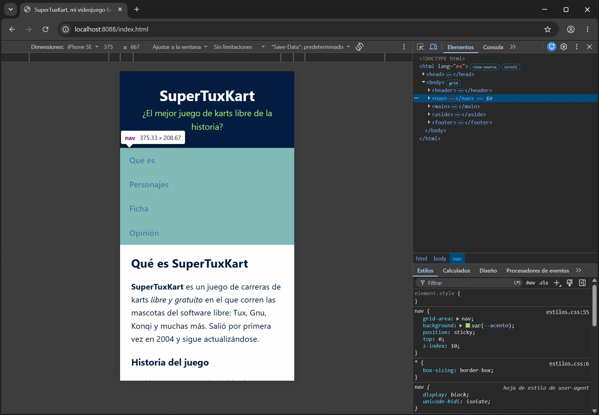
Figura 2.8. El modo dispositivo de las DevTools. Arriba, el dispositivo y sus medidas. Haz clic para ampliar.
Organizar la hoja
Variables: la paleta en un solo sitio
Los colores de la paleta se repiten en muchas reglas. Una variable guarda un valor con nombre: se escribe una vez en :root y se usa con var() donde haga falta.
/* :root es el elemento html: valen en toda la página */
:root {
--fondo: #fefefe;
--texto: #041c3f;
--acento: #a5e070;
--acento-claro: #e3ecf3;
--linea: #d6e0ea;
}
body { background: var(--fondo); color: var(--texto); }
header { background: var(--texto); color: var(--fondo); }
nav, th { background: var(--acento); }
td, th { border-bottom: 1px solid var(--linea); }
aside { background: var(--acento-claro); }
/* cambiar la paleta entera es cambiar cinco líneas */
- —El nombre empieza por dos guiones:
--acento. Cámbialo en DevTools, en:root, y cambia todo a la vez - —Es lo que hace un tema de WordPress con sus «estilos globales»
Organizar la hoja
Cómo se organiza una hoja de estilo
Una hoja crece hasta cientos de líneas. Con un orden fijo encuentras cada regla enseguida, y las media queries, al final, ganan a lo anterior: a igual especificidad gana la última.
/* 1. Reset del curso */
* { box-sizing: border-box; }
body { margin: 0; }
img { max-width: 100%; height: auto; }
/* 2. Variables */
:root { --fondo: #fefefe; --texto: #041c3f; … }
/* 3. Base: body, encabezados, enlaces */
body { … } h1, h2, h3 { … } a { … }
/* 4. Zonas: header, nav, main, aside, footer */
header { … } nav { … } main { … }
/* 5. Componentes: tabla, formulario, galería */
table { … } form { … } .galeria { … }
/* 6. Media queries, al final */
@media (min-width: 48rem) { … }
- —Comentarios de sección: la hoja se lee de arriba abajo como un índice
- —Nombres de clase que describan el contenido, en minúsculas y con guiones:
.acento-claro,.galeria - —Todo el estilo, en la hoja y con clases. Los ids, para las anclas: un id pesa tanto que luego cuesta cambiar su estilo.
!importantystylerompen la cascada: se evitan - —Antes de entregar, el validador CSS y la checklist
Organizar la hoja
Lo que verás en páginas antiguas y no debes escribir
Tabla 2.2. Funciona todavía, pero es de antes de flexbox y grid (2015). Cuando lo veas en una página o en un tutorial antiguo, ya sabes qué es y por qué no lo copias.
La IA y el diseño
Con IA, tú pones la dirección
Un asistente de IA escribe hoy una hoja de estilo entera a partir de una referencia: una web, una captura o un estilo con nombre. Tu trabajo es decirle qué quieres y revisar lo que entrega.
Tres mensajes, con el HTML de la UT1
- 1«Dale a esta página el estilo de la web de GTA VI, con un único archivo style.css.»
- 2«Conéctate a la web de Rockstar y analiza las transiciones, el texto que cambia de color, el degradado del fondo, las imágenes que avanzan con el scroll, los botones y las fuentes. Que quede igual.»
- 3«Pon en la portada un vídeo del juego que avance con el scroll e imágenes de Tux, Gnu y Nolok en sus tarjetas.»
Lo que revisas tú: que el HTML siga igual, las licencias de las imágenes, las fuentes de Google (diapositiva 19), en qué navegadores van las animaciones y el móvil: al bajar, el menú tapa los títulos.
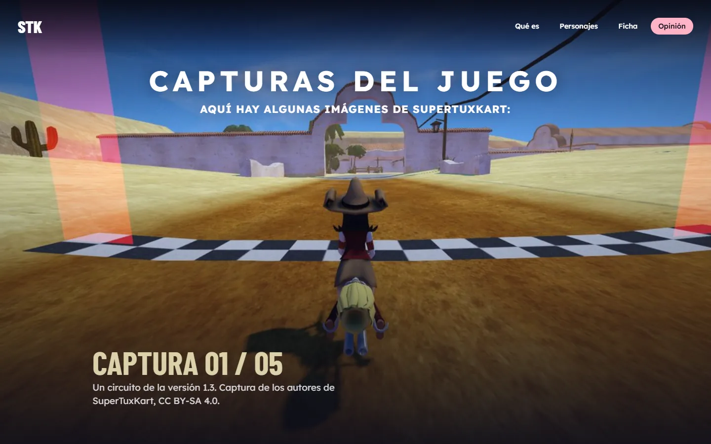
Figura 2.9. La página de la UT1 con el estilo de la web de GTA VI. Hecha con Claude Opus 5.5 el 3 de octubre de 2026: 1.229 líneas de CSS, sin JavaScript. Imágenes de SuperTuxKart con sus créditos al pie de la página.
La IA y el diseño
El vocabulario para pedir: estilos de diseño
Para dirigir a una IA, o a un diseñador, hay que saber nombrar lo que quieres. Seis estilos que verás en webs de hoy, cada uno con la línea de CSS que lo define.
Cómo se pide: un estilo con nombre, una referencia (la dirección de una web o una captura), lo que no se toca (el HTML) y qué debe entregar (un único style.css). Referencias de diseño: awwwards.com, dribbble.com.
¿Y los frameworks? Tailwind da clases ya hechas que ordenan el código y es el que más usa la IA; Bootstrap va a menos. Aquí, CSS sin framework: es lo que tocarás en WordPress.
Repaso
Cómo se encuentra el error en una hoja
El navegador no avisa: descarta lo que no entiende y sigue. Por eso se busca en orden.
- 1.Llaves y puntos y coma: ¿cierra cada regla?, ¿acaba cada declaración?
- 2.El selector: ¿lleva el punto la clase, la almohadilla el id, va pegada la seudoclase?
- 3.La propiedad y el valor: ¿está bien escrita?, ¿tiene unidad?, ¿el color tiene 3 o 6 dígitos?
- ✓En el ejemplo, la línea 2 no acaba en punto y coma: el navegador lee «#041c3f font-size: 2rem» como un solo valor y pierde las dos
h1 {
color: #041c3f
font-size: 2rem;
}
/* línea 2: falta el punto y coma */
Encuentra el error
Cada fragmento tiene un error. Pulsa la línea donde está y elige de qué tipo es. Pista te marca la línea; Resolver lo explica.
Los errores que más se repiten en las prácticas: el punto y coma que falta, la clase sin punto, el valor sin unidad y el justify-content puesto en el hijo en vez de en el contenedor.
Página final: responsive y publicada
Pasa la maqueta de tu página a grid-template-areas, con la versión de una columna como base y la de escritorio en una media query. Publica y comprueba en tu móvil.
Es la entrega de toda la unidad: la página con sus tres partes, la captura del modo dispositivo y el índice del cuaderno.
Duración
2 sesiones
Modalidad
Individual, en el aula
Entrega en Classroom
URL de la página, captura del modo dispositivo y URL del índice del cuaderno
Material
VS Code, navegador, GitHub, CodePen. Sin IA
- 1.Base de una columna con áreas; a partir de 48rem, dos columnas. Menú apilado en móvil y en fila en escritorio,
stickyarriba - 2.Galería de capturas con grid: al menos tres más con crédito,
object-fity una destacada con etiqueta - 3.Paleta en variables; hoja organizada como en la diapositiva 55 y validada; nada desborda a 375 px
- 4.Sube
index.html,estilos.csseimg/a tu repositorio y abre la URL en el móvil - 5.Cuaderno: ejercicio 5, la rejilla de personajes responsive, y el pen índice con los cinco enlaces
Maqueta 3: escritorio y móvil
Figura 2.10. A 1280 px: dos columnas, menú en fila, galería con la captura destacada. Recórrela con la rueda del ratón.
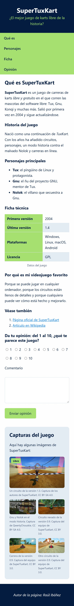
Figura 2.11. A 375 px: una columna y el menú apilado. Clic para verla en grande.
Subir la versión final a GitHub Pages
- 1.Abre tu repositorio
tuusuario.github.io - 2.Botón + junto a Code, Upload files, y arrastra
index.html,estilos.cssy la carpetaimg - 3.Commit changes. Espera un minuto
- 4.Abre la URL en tu móvil. Si la hoja no carga: mayúsculas en el nombre o ruta del
hrefdistinta de la del archivo. En el servidor,Estilos.cssyestilos.cssson archivos distintos
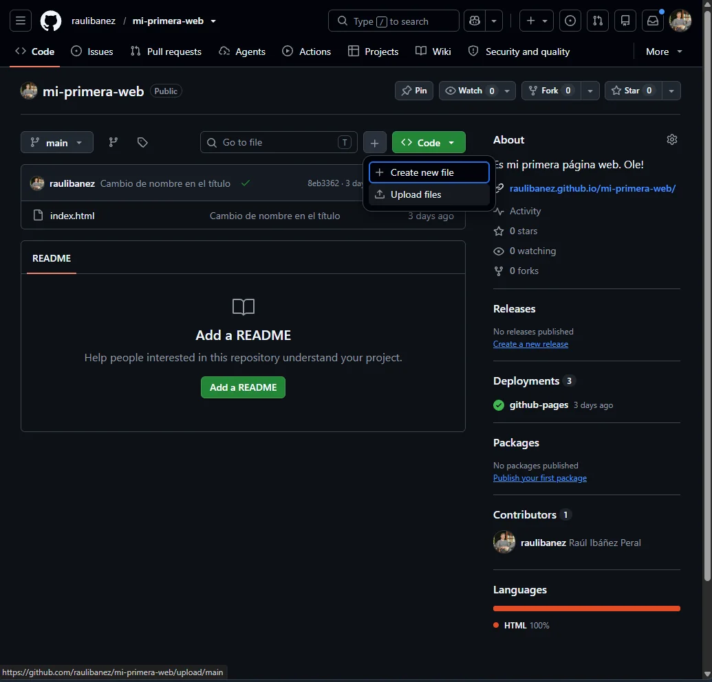
Figura 2.12. Subir archivos desde la web de GitHub. Es lo mismo que hiciste en la UT1 con un solo archivo.
Repaso
Cómo se empareja
A la izquierda, seis propiedades o valores; a la derecha, seis efectos desordenados. Para cada uno, elige en el desplegable lo que hace.
gap
Espacio entre los hijos de un flex o de un grid, sin márgenes
position: sticky
Se queda pegado al llegar al borde de la ventana
Empareja cada propiedad con su efecto
Cuatro juegos: caja y texto; flexbox y grid; responsive, estados y posición; selectores. Comprobar corrige las seis, Pista resuelve una, Otro ejercicio cambia de juego. Es el repaso de toda la unidad antes del examen.
Examen de teoría
Test de opción múltiple, toda la sesión, sin apuntes ni IA. La mitad de las preguntas llevan un fragmento de código o una captura: «¿qué regla produce esto?», «¿dónde está el error?».
Para prepararlo: repasa el resumen y la chuleta de CSS (con su Modo repaso), vuelve a hacer los tres quiz y los cuatro interactivos, y lee las diapositivas de código de esta presentación.
Qué entra
- 2.1Qué es CSS, formas de aplicarlo, selectores, colores, tipografía, unidades, modelo de caja, cascada y herencia
- 2.3Display, flexbox, el menú, estados, listas, tablas, formularios e imágenes
- 2.5Grid, áreas, position, responsive y media queries, variables, organización de la hoja, lo que ya no se escribe
Mi película favorita
Recibes un index.html terminado sobre una película, con la misma estructura que tu página, y una maqueta de escritorio y otra de móvil con su paleta. Escribe estilos.css para que se parezca lo más posible. No se toca el HTML.
Reglas: VS Code o CodePen en modo incógnito. Sin IA, sin buscar código ni referencias. Sí esta presentación y su chuleta. Preguntar a un compañero es copiar.
Duración
1 sesión, 50 minutos
Modalidad
Individual, en el aula
Entrega
estilos.css en Classroom al acabar
Material
VS Code o CodePen y esta presentación, con su chuleta. Sin IA
Se valora: hoja enlazada y válida, paleta y tipografía, cabecera y menú con flexbox y :hover, dos columnas con grid, tabla y formulario, y la media query que lo apila en móvil.
La maqueta del examen
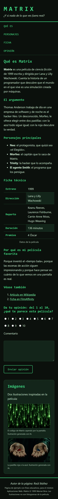
La paleta
Tipografía
Títulos, menú y botón: Consolas, "Courier New", monospace
Texto: la pila del sistema, como en tu página
Página de ejemplo con fines educativos. Matrix © 1999 Warner Bros. Las dos imágenes son ilustraciones generadas con IA, no fotogramas de la película.
Figura 2.13. La maqueta se proyecta durante el examen y está en Classroom a tamaño completo. Recorre cada captura con la rueda del ratón; clic para verla en grande.
Unidad 2
Resumen de la unidad
CSS dice cómo se ve. Va en una hoja externa, con reglas de selector, propiedad y valor, enlazada desde el head.
El selector elige (elemento, clase, id, descendiente) y la especificidad decide quién gana; el estilo del texto se hereda y la caja es propia de cada elemento.
Todo es una caja con relleno, borde y margen; con box-sizing: border-box, el ancho los incluye. rem para texto y espacios, max-width para anchos.
Flexbox coloca en una dirección, grid en dos con áreas, y position saca una caja de su sitio: sticky para el menú, absolute para una etiqueta sobre una imagen.
Responsive es viewport, unidades relativas, imágenes fluidas y media queries: una hoja, dos maquetas.
DevTools enseña cada regla y el validador avisa de los errores. La hoja se organiza en orden: reset, variables, base, zonas, componentes, media queries.
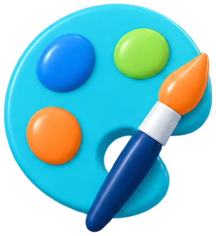
Chuleta de CSS · 1 de 4
La regla, los selectores y los colores
Todo lo que escribes en una hoja de estilo, agrupado como se explicó. Pulsa el título de un grupo para ir a su explicación; Modo repaso tapa lo que hace cada cosa.
selector { propiedad: valor; }Una regla: a quién y qué aspecto/* … */Comentario para quien lee la hoja<link rel="stylesheet" href="…">Hoja externa, enlazada en el head<style>…</style>Hoja interna, en el head: pruebasstyle="…"En la etiqueta: gana a la hoja, se evitapTodos los p.destacadoLos que llevan class="destacado"#fichaEl elemento con id="ficha", únicoh1, h2, h3Varios a la vez, separados por comas*Todos los elementosnav aDescendiente: los a dentro de nav, a cualquier nivelul > liHijo: los li justo dentro de un ulp.destacadoLos p que llevan esa clase.boton.grandeLos que llevan las dos clasesinput[type="email"]Por atributo: los campos de correoa:hoverCon el ratón encimaa:focusElegido con el teclado (Tab)a:activeMientras se pulsaa:visitedEnlace ya visitadotr:nth-child(even)Por posición: las pares; odd, las imparesli::markerUna parte del elemento: la viñetacolor: #041c3fColor del textobackground: #fefefeFondo; atajo de background-colorcrimsonPor su nombre: hay unos 148#dc143cRojo, verde y azul, de 00 a ffrgb(220 20 60)Rojo, verde y azul, de 0 a 255hsl(348 83% 47%)Tono, saturación y luzrgb(220 20 60 / 40%)Con transparencia: se ve al 40 %selector propiedad: valor · … lo que tú pongas · <link> elemento vacío: solo apertura
Chuleta de CSS · 2 de 4
Unidades, texto y cajas
Las medidas, la letra y la caja de cada elemento: lo que da aspecto a una página aunque siga en una columna. Pulsa el título de un grupo para ir a su explicación.
pxPíxel: fijo. Bordes y detalles%De la caja que lo contiene. AnchosremDe la letra de la página. Texto y espaciosemDe la letra del propio elementovw vh1 % del ancho o del alto de la ventanafrUna parte del espacio libre de una rejillafont-family: "Nunito", sans-serifPila: usa la primera fuente que tengafont-size: 1.1remTamaño de la letrafont-weight: 700Grosor: 400 normal, 700 negritafont-style: italicCursivaline-height: 1.6Interlineado: 1,6 veces la letraletter-spacing: .02emEspacio entre letrastext-align: centerAlineación: left, center, right, justifytext-transform: uppercaseTodo en mayúsculastext-decoration: noneLínea del texto: underline subrayafont: inheritLa letra del padre: en formularios@font-face { … }Carga una fuente desde un archivopadding: 1remRelleno: del contenido al bordeborder: 2px solid #041c3fBorde: grosor, estilo y colormargin: 1rem 0Margen: separación con las otras cajas1 valor: los cuatro lados · 2: arriba-abajo y lados · 4: arriba, derecha, abajo, izquierda
border-radius: 12pxEsquinas redondeadas; 50 %, círculobox-shadow: 0 4px 12px #0003Sombra: x, y, difuminado, colorwidth: 250pxAncho; height, el altomax-width: 60remAncho máximo: crece hasta ahímin-height: 100vhAlto mínimo: aquí, la ventanamargin: 0 autoCentra una caja que tenga ancho* { box-sizing: border-box; }El ancho incluye relleno y bordebody { margin: 0; }Página pegada a la ventanaimg { max-width: 100%; height: auto; }Cada imagen cabe en su cajaselector propiedad: valor · … lo que tú pongas
Chuleta de CSS · 3 de 4
Colocar con flexbox y los componentes
Cómo se coloca cada caja y cómo se ven el menú, las listas, las tablas y las imágenes de tu página. Pulsa el título de un grupo para ir a su explicación.
display: blockEn bloque: toda la anchura, en línea nuevadisplay: inlineEn línea: seguido del textodisplay: inline-blockEn línea, con ancho, alto y rellenodisplay: noneQuita el elemento y su huecovisibility: hiddenInvisible, conservando su huecoEn el contenedor
display: flexColoca a sus hijos en filaflex-direction: columnEn columna; row, en filajustify-content: centerReparte en el eje principalValores: flex-start · center · flex-end · space-between · space-around · space-evenly
align-items: centerAlinea en el eje cruzadoflex-wrap: wrapLos que no caben bajan de líneagap: 1remHueco entre hijos; también en gridEn los hijos
flex: 1Crece: reparte el espacio libreflex: 0 0 16remFijo: ni crece ni encogetransition: color .2sEl cambio, suavetransform: scale(1.05)Amplía la caja: aquí, un 5 %cursor: pointerPuntero en forma de manooutline: 3px solid #017ce9Contorno de lo elegido con Tablist-style-type: squareViñeta o número: disc, decimal…list-style: noneSin viñetas: la base de un menúlist-style-position: insideLa viñeta, dentro del textoborder-collapse: collapseBordes de las celdas, unidoscaption-side: bottomEl título de la tabla, debajovertical-align: middleAlineación vertical en la celdaoverflow-x: autoBarra para desplazarse si no cabeaspect-ratio: 16 / 9Proporción fija de la cajaobject-fit: coverLlena la caja sin deformarsefloat: leftA un lado, con el texto alrededorselector propiedad: valor · … lo que tú pongas
Chuleta de CSS · 4 de 4
Grid, position y responsive
La maqueta de la página entera, su versión para el móvil y el orden de la hoja. Pulsa el título de un grupo para ir a su explicación.
display: gridColoca a sus hijos en una rejillagrid-template-columns: 2fr 1frLas columnas y cuánto mide cada unarepeat(3, 1fr)Tres columnas igualesrepeat(auto-fit, minmax(9rem, 1fr))Tantas como quepan, de 9rem o másgrid-template-areas: "a b" "c d"La maqueta dibujada, fila a filagrid-area: mainManda el elemento a su zonagrid-column: span 2Ocupa dos columnas; grid-row, filasposition: relativeSe mueve desde su sitio; marco de un absoluteposition: absoluteEncima, respecto a su marco relativeposition: stickyNormal hasta llegar al borde; ahí se quedaposition: fixedQuieta en la ventana, también al hacer scrolltop: 0Dónde: top, right, bottom, leftz-index: 10Quién queda encima: el número mayor<meta name="viewport" …>El móvil usa su ancho real@media (min-width: 48rem) { … }Reglas desde 48rem de ancho@media (max-width: 48rem) { … }Reglas hasta 48rem de anchoMóvil primero: la base, una columna; las media queries añaden columnas al crecer
<font><p align><big><tt>bgcolorcellspacingcellpaddingtype="text/css"-webkit-→ hoy, CSSColumnas con float o con tablas → hoy, flexbox y grid
selector propiedad: valor · … lo que tú pongas · <meta> elemento vacío: solo apertura
Para ampliar
Recursos y documentación
Cuando dudes de una propiedad, la respuesta está en MDN. Cuando dudes de si tu hoja está bien, en el validador y en DevTools.
Enlaces consultados el 12 de septiembre de 2026.
- CSSMDN Web Docs, referencia de CSS en español: developer.mozilla.org/es/docs/Web/CSS. Guías de flexbox y de grid en la misma web.
- ValidadorValidador de CSS del W3C: jigsaw.w3.org/css-validator
- Compatibilidad¿Funciona en todos los navegadores? caniuse.com y la marca «Baseline» de MDN.
- Colores y fuentesPaletas: coolors.co, colorhunt.co. Fuentes: fonts.google.com.
- PublicarSubir archivos a un repositorio desde la web de GitHub: docs.github.com, «Adding a file to a repository».
- DatosStatCounter, cuota de móvil y escritorio, agosto de 2026.
- EjemploLa página de SuperTuxKart con su hoja de estilo de referencia: se publica en Classroom después del examen práctico.
- NormativaCurrículo del ciclo de Sistemas Microinformáticos y Redes en Castilla y León, módulo 0228. BOCyL n.º 173, 9 de septiembre de 2009.